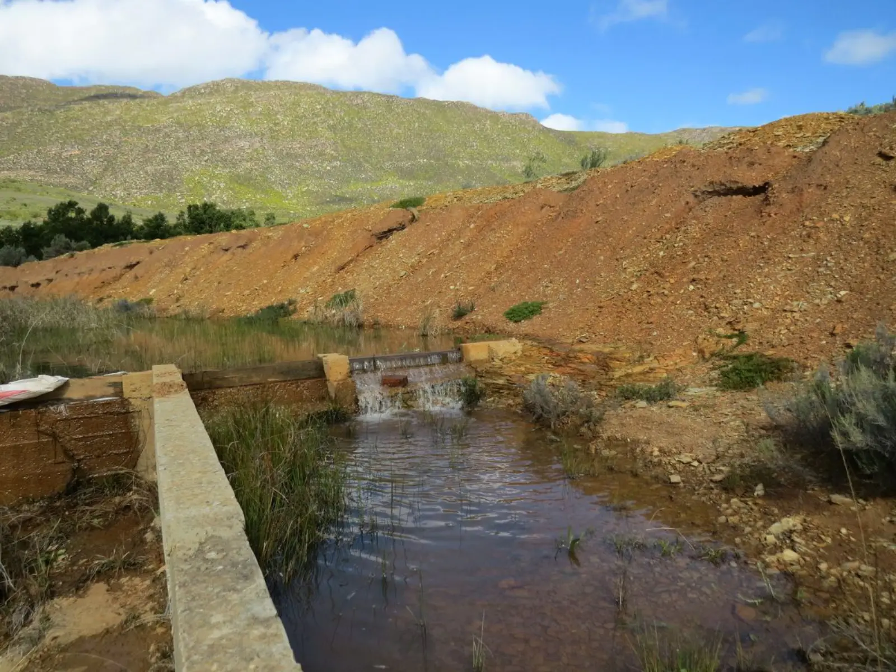
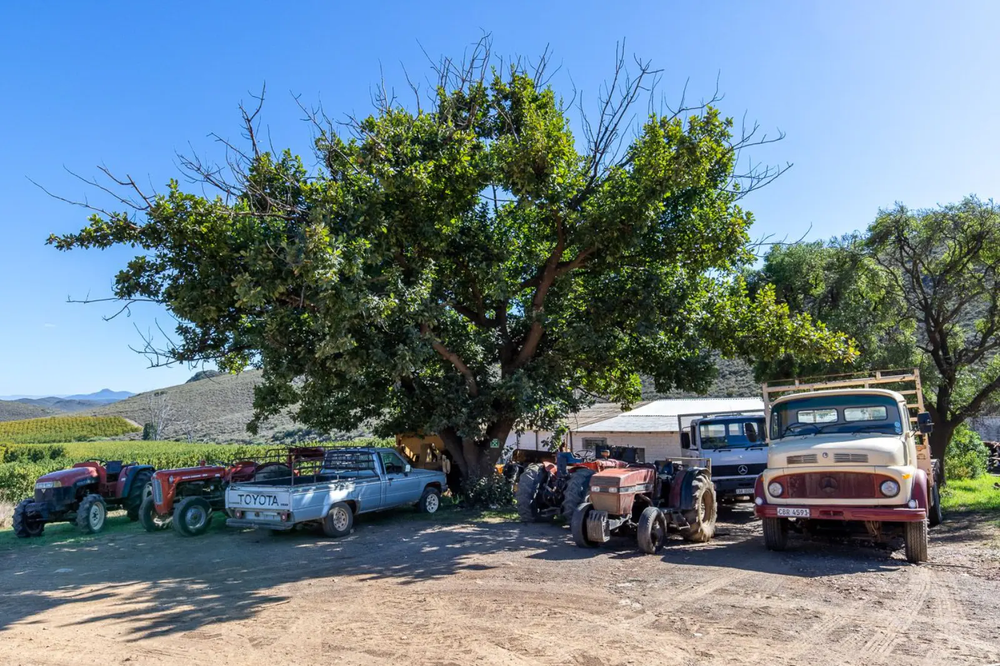

Selling your farm
Many of the farms on our books are with us on an Exclusive Sole Mandate. Our successes speak for themselves: we sell more farms than any other estate agent in the area.
Each listing carries a full set of photos, the facts a farmer asks first (hectares, water rights, dams, boreholes, buildings, rates) and, on some farms, a video.

